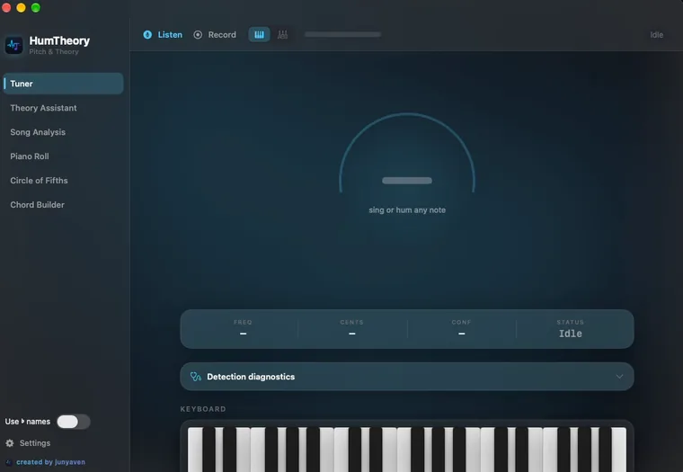
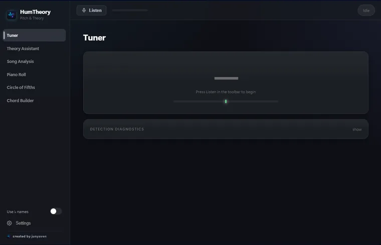

Input
—
Hum it. HumTheory hears the pitch, names the chord, finds the key — and hands you the MIDI.
A progression playing through the roll. As the playhead crosses each bar, the chord resolves and the notes light up — the same view the desktop app builds from your recordings, generated melodies and imported MIDI.
Sing anything. Pitch tracking runs in real time, locks each note as you hold it, and drops it onto the roll — ready to export as a standard MIDI file and drag into your DAW.
Play or sing several notes and HumTheory works out what they add up to — with a confidence value and the runner-up interpretations, because harmony is genuinely ambiguous sometimes.
Load an audio file. HumTheory estimates key and tempo, decodes a chord timeline and marks section boundaries — all on your own machine, nothing uploaded.
Genre-aware suggestions built from the key you're actually in — pop, jazz, blues, lo-fi and more. Audition them, send them to the roll, export the MIDI.
Chords map onto a playable fretboard with real fingering positions. Hover a chord to light up the shape.
Tap any key. Everything around it updates — relative minor, scale notes, diatonic chords, Roman numerals. This is the real tool from the app, running here.
The Tuner on each platform. Same engine, same navigation, same analysis — click either to look closer.


Low-latency microphone access and local analysis. Your audio never leaves your computer.
Some features may be incomplete, experimental, or not work correctly yet. Detection is an estimate — the app shows confidence values and flags ambiguous chords rather than pretending to be certain. Project saving and piano-roll note editing aren't built yet. Builds are published as GitHub releases and are not code-signed yet, so Windows and macOS will both show a warning the first time you open them.